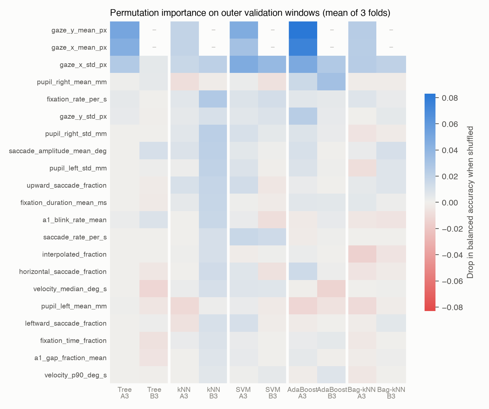
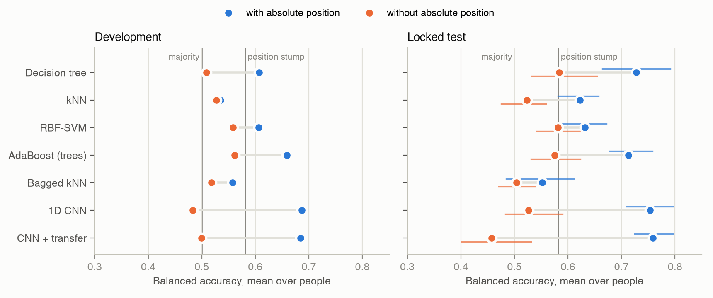
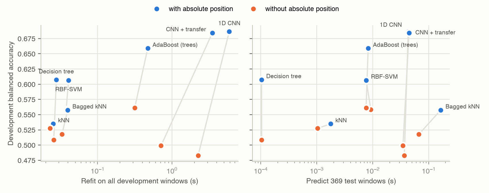

Eivind Systad Geiran and Trym Andreas Johnsen - IT3212 - EMIP eye-tracking dataset
Code and every result file: https://github.com/egeiran/Data-Preprocessing-EMIP, folder
assignment3/ (src/ for code, results/ for evidence, WORKLOG.md for the full decision log).
Real-world problem. Eye trackers are moving into consumer devices such as VR/AR headsets, webcam-based tracking in browsers and remote studies that share raw recordings. Gaze data is sensitive because it shows what a person looks at and reads. Researchers have proposed that applications receive only derived measures, such as fixations and dwell times within areas of interest, instead of raw gaze samples, which can identify the user (David-John et al., 2021). Some platforms do not share the user's eye input with apps at all (Apple, 2026). We test a simple, position-free version of this idea: keep derived signals such as pupil size, blinks, eye speed and gaze spread, but withhold absolute screen position. Is that enough to hide what someone is reading?
Machine-learning problem. Binary classification of two-second gaze windows: is a
previously unseen person reading the vehicle or the rectangle program? Every model is
trained twice:
The difference between A and B shows how much of the information lies in where people look rather than how they look. Evaluation is on people the model has never seen, using balanced accuracy averaged with equal weight per person, so that people with long recordings do not dominate.
Why this dataset fits. The EMIP recordings come from a code-comprehension study. Each
participant read both short programs, one after the other, and answered a multiple-choice
question after each (20 started with rectangle, 13 with vehicle). Because every person
contributes both classes, a model must separate the two programs within a person, and
grouped validation by person is possible in every fold. Labels such as expertise or answer
correctness would give one label per person, about 30 examples in total, and they are not
part of the recordings we have.
Scope. This is a closed-set study with two known texts and 30 usable people. A weak
result without position would not prove that content cannot leak through other signals,
larger models or more data. The comparison of A and B was planned before any results
existed; using it as the main question and adding the privacy motivation was decided after
the first development results (recorded in WORKLOG.md).
Reused from Assignment 1. Invalid samples (tracker validity, off-screen or exactly-zero coordinates) are removed. Holes up to 150 ms are linearly interpolated, which covers blinks, and longer holes stay as gaps. Samples faster than 1,000 deg/s are removed as physically impossible. A (person, program) pair is kept only with at least 20 s of usable data. The cleaned 250 Hz samples are cached once, and Assignment 3 never rewrites them.
Windows. Each code screen is cut into non-overlapping two-second windows, starting at the raw screen message. A window never crosses a screen change, and a partial last window is dropped. Two quality rules are applied:
| Rule | Requirement | Reason |
|---|---|---|
| V1 | >=90% of the 2 s covered by samples, no hole over 150 ms | a summary needs most of its window |
| V2 | additionally >=80% directly measured, not interpolated | interpolated blinks are straight lines, not gaze |
The 80% threshold was fixed from the development quality distribution before any V2 model was trained. It removes 31 of 992 development windows and no person.
Split. The seven test people from Assignment 1's participant split are locked: they were not used for any choice and were evaluated exactly once, at the end (section 8). The 23 development people (961 windows, 546 vehicle and 415 rectangle) are divided into three outer folds by person. Inside each outer training set, three inner folds by person choose the hyperparameters, so an outer validation person never influences a model choice.
Reproducibility. The first comparison (V2, made on Linux) was reproduced byte-for-byte on a second machine and operating system (macOS), where all later stages were run. Only the binary bytes of the cached Parquet tables differ between machines, so the later stages check data by content fingerprints.
Window summaries (13 features). For each window:
These describe where the gaze is, how spread out it is, how fast it moves and how much signal is missing. They are cheap to compute and easy to interpret. Mean x and y are the only absolute-position features; spread, speed and pupil size do not move if the whole window is shifted on screen.
Fixation and saccade events (8 features). The summaries above say nothing about the structure of reading, so a velocity-threshold detector (I-VT; Salvucci and Goldberg, 2000) was added:
| Setting | Value | Justification |
|---|---|---|
| speed | centred over three samples | less noise than consecutive-sample speed at 250 Hz |
| threshold | 30 deg/s | common default for screen-based trackers (Olsen, 2012) |
| minimum fixation | 60 ms (15 samples) | shorter fixations are treated as noise by the same source |
| breaks | interpolated sample or interval >20 ms | interpolation would invent smooth fixations |
From the events we compute fixation rate, mean fixation duration, fraction of time in fixation, saccade rate, mean saccade amplitude, and the share of saccades that are horizontal, leftward (regressions and line returns) and upward. All eight use coordinate differences only. To check this, every window was recomputed after shifting it 128 px right and 64 px up, and every event and feature was identical. The medians look like normal reading: 3.5 fixations per second, 266 ms per fixation and 92% of the time in fixation.
The resulting feature groups are A3 (21 features, with position) and B3 (19 features,
without). Thresholds were fixed in feature_plan_v3.json before any distribution or score
was seen.
Hand-designed selection. The A/B design is itself a feature selection: B removes the two mean-position features to test a specific hypothesis. Identifiers, labels, stimulus names, timestamps, language and raw eye-position or gaze-vector columns are never given to a model.
No PCA. Assignment 1 used PCA on the sample-level data. Here we do not, for two reasons. First, the feature sets are small (11–21) and each feature has a meaning that we want to explain. Second, every principal component would mix mean position into the other features, which would destroy the A/B comparison that the whole study rests on.
Learned filter selection. For tree, kNN and SVM, a mutual-information filter
(SelectKBest) is part of the training pipeline and keeps k = 5, 10 or all features. k is
tuned jointly with the model's own hyperparameters on inner folds, so no-selection remains a
possible choice. Mutual information was chosen because it is model-agnostic, captures
non-linear dependence and is fitted only on training people. The ensembles do not get the
filter: boosted trees select features at every split, and bagging already draws random
feature subsets.
What it found. The inner folds chose k = all in 12 of 18 cases. When k = 5 or 10 won, the chosen features differed between folds. Mutual information therefore found no small, stable subset. Mean pupil size was often among the top five. A likely reason is screen luminance or task order rather than reading behaviour; this is a limitation, not a finding.

Figure 1. Permutation importance on outer validation windows (drop in balanced accuracy when one feature is shuffled; mean of three folds; "–" means the feature is not in the group). With position, the models rely mostly on mean x and y and on horizontal spread. Without position, the best models use horizontal spread (roughly line length) and the rates of fixations and saccades. B therefore still contains relative spatial structure. It is not purely "how" people look.
The data are small and tabular: 961 development windows from 23 people, about 640 in each outer training set, and 19–21 features in different units (pixels, millimetres, degrees per second, fractions).
| Algorithm | Why it fits this problem | Tuned values |
|---|---|---|
| Decision tree | splits on single features like the position stump (one split on mean y), so it shows what more than one threshold adds; no scaling across units | depth 2/4/6, minimum leaf 5/10 windows |
| k-nearest neighbours | no assumption about the shape of the classes; tests directly whether windows of the same program lie close together | 5/15/31 neighbours, uniform/distance votes |
| RBF-kernel SVM | non-linear boundary with explicit regularisation, which limits overfitting with few people | C = 0.1/1/10, gamma = 0.01/0.1 |
Why these values. Each family has six settings, crossed with the filter's three k values (section 4). Tree depth runs from 2, one step above the stump, to 6: up to 64 leaves of at least 10 windows, about what 640 training windows can fill. Odd neighbour counts avoid tied votes; 5 is local and 31 (about 5% of the training windows) is smooth. C spans strong to weak regularisation on a log scale, and gamma 0.01/0.1 lies on either side of scikit-learn's default (1/number of features for standardised data, about 0.05 when all features are kept). The chosen values often sit at a grid edge (depth 6 and 5 neighbours in 4 of 6 folds each), so the best setting may lie outside the grid; the grids were declared before the comparison and not widened afterwards.
Why not the others. Regression and additive models give each feature a separate effect unless interactions are added by hand, while the tree and SVM can combine position with spread; the SVM with small gamma also comes close to a linear boundary. Gaussian Naive Bayes assumes independent, normally distributed features within each class, but several fractions pile up at 0 or 1; at least half of the windows have no upward saccade. A neural network is covered in section 9.
The three have different inductive biases: rules on single features, local similarity in the full space, and a global smooth margin. This makes their disagreement informative. kNN and SVM standardise features inside the training pipeline, so validation people never influence the scaling. Tree and SVM use balanced class weights because vehicle windows are 57% of the data (the vehicle program takes longer to read); scikit-learn's kNN has no such option. Every family and feature group gets the same search budget and the same folds, so differences are paired by person.
Development results are averaged over the 23 people, using each person's prediction from the outer fold where that person was held out.
| Model | Balanced accuracy, A3 / B3 | Macro-F1, A3 / B3 | Outer-fold range, A3 / B3 |
|---|---|---|---|
| Decision tree | .607 / .509 | .567 / .465 | .573–.657 / .489–.530 |
| kNN | .535 / .528 | .507 / .495 | .491–.614 / .476–.615 |
| RBF-SVM | .607 / .558 | .581 / .528 | .526–.690 / .504–.595 |
| Majority class / position-only stump | .500 / .581 | .352 / .453 |
Position carries most of the signal. A depth-one tree that only sees mean y reaches .581, about as high as kNN and SVM with every feature. Without absolute position, tree and kNN fall to near chance. SVM keeps the most (.558), but one of its outer folds is at .504.
Similar accuracy, different errors. The stump predicts rectangle for 96% of rectangle windows but only 17% of vehicle windows, because it learned a single y-threshold. Tree and SVM with A3 have more even class recalls (.56/.63 and .61/.59). kNN favours the majority class (vehicle recall .69, rectangle .41).
Why kNN is weakest with position. One likely reason is that it is the only one of the three without class weights, so it under-predicts rectangle, which balanced accuracy penalises. This is not the whole story: it has the same bias without position, where it beats the tree. Fewer features did not help either; on the inner folds, keeping five beat keeping all 21 in only one of three folds. Without position, the three are within .05 of each other.
Uncertainty. Single people range from .44 to .80 (tree, A3) and from .34 to .89 (SVM, A3), and the person SD is .09–.14. With three folds and 23 people, differences of a few points between models are not reliable. The first set of features (V2, 13 features) gave .616/.527 (tree), .584/.498 (kNN) and .582/.534 (SVM). The event features and the filter did not give a consistent gain.
Following the assignment, boosting and bagging use different base algorithms: decision trees for boosting and kNN for bagging.
AdaBoost with shallow trees (boosting). The steps:
Boosting suits weak, high-bias learners: one shallow tree barely beats chance, but a sequence of trees that focuses on earlier mistakes can model interactions. Depth (1/2/3) and learning rate (0.1/1) are tuned.
Bagged kNN (bagging). The steps:
Bagging reduces variance by averaging models fitted to perturbed data. kNN changes little under row resampling alone, so the random feature subsets are what make the members differ. k (15/31) and the feature share are tuned.
A correction before any result. The plan first gave the base tree balanced class weights. That crashed AdaBoost on its first fit: the tree optimised balanced weights while AdaBoost scored it under uniform weights, so its error could exceed 0.5. The balance was moved to AdaBoost's starting weights. This change was made and recorded before any ensemble score existed.
| Model | Balanced accuracy, A3 / B3 | Outer-fold range, A3 / B3 |
|---|---|---|
| AdaBoost (trees) | .659 / .561 | .648–.672 / .527–.588 |
| Bagged kNN | .558 / .518 | .486–.612 / .487–.553 |
AdaBoost with position is the best development model and also the most stable over folds. It is .05 above the best single model and .08 above the stump. Bagging helps kNN with position (.535 to .558) but not without it. Neither ensemble lifts the position-free group clearly above .56: ensembles extract more from position, not from gaze dynamics.
What "transfer" means here. The assignment does not define it, so we interpret it as transfer learning. The CNN from section 9 is first trained on a source task whose label is unrelated to the program shown: is the participant looking at an instruction screen or at a multiple-choice answer screen? These screens come from the same recordings, tracker and people, but are never code. The convolution layers are then reused for vehicle/rectangle in one of two modes, chosen on inner folds:
Pretraining uses only the training people of the current split (255–322 source windows per inner split, 430–447 per outer split), so no validation or test person leaks in.
Development comparison (23 people, outer folds; best single model per group shown as "basic"):
| Method | With position (A) | Without position (B) | A − B |
|---|---|---|---|
| Basic: best of tree, kNN, SVM | .607 (tree) | .558 (SVM) | .049 |
| Boosting: AdaBoost (trees) | .659 | .561 | .098 |
| Bagging: bagged kNN | .558 | .518 | .040 |
| CNN from scratch | .687 | .483 | .204 |
| CNN + transfer | .684 | .499 | .185 |
| Controls: majority / position-only stump | .500 / .581 |
Locked test. Every method was then tuned on all 23 development people, refitted on all 961 development windows and scored once on the seven locked people. One of them (pid 18) has only vehicle windows, so the two-class metrics use six people; the intervals resample those six people 10,000 times and are descriptive only.
| Method | With position (A) | Without position (B) | A − B, paired (95% interval) | People with A > B |
|---|---|---|---|---|
| Decision tree | .728 | .584 | .144 (.029 to .254) | 5 of 6 |
| kNN | .622 | .523 | .099 (.041 to .147) | 5 of 6 |
| RBF-SVM | .632 | .582 | .050 (−.020 to .122) | 4 of 6 |
| AdaBoost (trees) | .713 | .575 | .138 (.077 to .204) | 6 of 6 |
| Bagged kNN | .552 | .504 | .048 (−.010 to .101) | 4 of 6 |
| CNN from scratch | .753 | .527 | .227 (.157 to .289) | 6 of 6 |
| CNN + transfer | .759 | .458 | .301 (.236 to .379) | 6 of 6 |
| Majority / position-only stump | .500 / .582 |

Figure 2. Balanced accuracy with (blue) and without (orange) absolute position. Left: 23 development people, outer folds. Right: locked test, six two-class people, with 95% person-bootstrap intervals. Vertical lines: majority class and the position-only stump.
The test confirms the development pattern on fresh people. With position, the CNN, the tree and AdaBoost reach .71–.76. Without position, the best method (tree, .584) only ties the stump that sees nothing but mean y (.582). Every family is better with position, and for five of the seven the paired interval excludes zero. Scores with position are higher on test than on development (CNN .753 vs .687, tree .728 vs .607). Six people cannot tell whether that is luck or easier recordings, so development remains the main comparison, and no model was re-chosen after the test.
Explanation. Every family gains from absolute position. The gap is about .05 for the basic models and bagging, .10 for boosting and .20 for the CNN. Without position, the best methods reach about .56, none reaches the position-only stump (.581), and the CNN falls to chance. AdaBoost profits because sequential shallow trees combine the position features with spread and pupil features. The CNN profits most because it sees the whole two-second trajectory on the screen rather than one mean point. Bagging gives kNN little, because kNN already has low variance (section 7), and the bagged model leans even more toward vehicle: it finds only about 30% of rectangle windows, against 40% for single kNN. Transfer gives nothing in either group. The source task is small, and telling instruction from answer screens is probably also mostly a layout task, so its filters likely add little that the target task cannot learn directly.
Input. The assignment allows the preprocessed data to be used directly, so the CNN sees each two-second window as a sequence of 500 time steps (4 ms each) with six channels: gaze x, gaze y, left and right pupil, a "measured" mask and an "interpolated" flag. A step without a sample is zero with mask 0, so holes are visible to the network and never squeezed out. For A, x and y are divided by the screen size; for B, each window's mean x and y is subtracted first, which removes absolute location but keeps relative movement, mirroring feature group B. Pupil channels are standardised with statistics from the training people only.
Architecture. Three blocks of 1D convolution, batch normalisation and ReLU, with max-pooling after the first two (f, 2f and 2f channels); then global average pooling, dropout 0.3 and a linear layer to two classes. This is 8,466 to 95,650 parameters depending on the setting, small enough for about 640 training windows. The loss is cross-entropy with balanced class weights.
Tuned hyperparameters and why.
| Hyperparameter | Values | Reason |
|---|---|---|
| filters f | 16, 32 | capacity; tests whether more feature maps help with this little data |
| kernel size | 5, 9, 15 | the first layer spans 20, 36 or 60 ms, the range of saccade durations; the last block sees 128, 240 or 408 ms, about one fixation and saccade |
Adam (learning rate 0.001), batch size 32, at most 60 epochs and dropout are standard values and fixed. Training stops when inner-validation balanced accuracy has not improved for 10 epochs, and the outer model is refitted for the median best epoch of the chosen setting. The search uses the same nested person folds as all other models: six settings x three inner folds x three outer folds x two groups. Inner scores are somewhat optimistic because the same inner people also stop training, but outer validation people are never used. Each refit was repeated with three seeds; seed changes move fold scores by about .02, less than the differences between folds.
Results. With absolute position, the CNN is the best development model (.687; folds .620–.757). Without it, the CNN is near chance (.483; folds .404–.550). Centred sequences carry spread, speed, pupil and fixation structure, yet the network finds no reliable difference between the programs in them. Yet SVM and AdaBoost reach .56 from summary features of the same windows. About 640 training windows were enough for the CNN to learn the strong position signal, but are probably too few to learn such a weak one from raw sequences.
Sizes and times below come from the final models on an otherwise idle laptop (Apple M4): refit on all 961 development windows (median of five warm repetitions; one timed run for the CNNs, on four threads) and prediction of all 369 test windows, about 12 minutes of gaze (five warm repetitions on one CPU thread). Balanced accuracy is development / test.
| Model (A / B) | Size of the fitted model | Refit (s) | Predict 369 windows (ms) | BA with position | BA without position |
|---|---|---|---|---|---|
| Decision tree | 39 / 57 nodes, depth 6 | .03 / .03 | 0.1 / 0.1 | .607 / .728 | .509 / .584 |
| kNN | stores 961 windows | .03 / .02 | 1.8 / 1.0 | .535 / .622 | .528 / .523 |
| RBF-SVM | 737 / 836 support vectors | .04 / .04 | 7.6 / 9.2 | .607 / .632 | .558 / .582 |
| AdaBoost | 200 trees, 2,622 / 1,088 nodes | .47 / .32 | 8.3 / 7.6 | .659 / .713 | .561 / .575 |
| Bagged kNN | 50 x 961 stored windows | .04 / .03 | 164 / 66 | .558 / .552 | .518 / .504 |
| CNN | 24,786 / 8,466 weights | 5.9 / 2.2 | 43 / 37 | .687 / .753 | .483 / .527 |
| CNN + transfer | 24,786 / 8,466 weights | 3.5 / 0.7 + pretraining | 44 / 35 | .684 / .759 | .499 / .458 |

Figure 3. Development balanced accuracy against refit time (left) and prediction time for the 369 test windows (right), log scale. Lines join each method's two feature groups.
Complexity and time. Time follows model size. A tree predicts by following one path of at most six splits, so 369 windows take 0.1 ms. kNN and the SVM compare every window with stored windows or support vectors (1–9 ms). AdaBoost evaluates 200 trees (8 ms). Bagged kNN runs 50 neighbour searches per window, the slowest prediction of the feature models (66–164 ms) for little or no gain in accuracy. The CNN costs the most to train, seconds against well under a second for the others, plus a hyperparameter search of one to two minutes per feature group. Search time also depends heavily on the machine: on the shared laptop during development, with other jobs and a power-saving mode competing for the CPU, the nested CNN search took almost four hours. The final tuning of every method, including the CNNs, took under five minutes on the idle machine.
In terms of the machine-learning problem. With absolute position, more capacity buys accuracy: from a one-split stump (.58) to a 39-node tree (.61 / .73), AdaBoost (.66 / .71) and the CNN (.69 / .75), at a cost that grows from microseconds to seconds. Without position, extra capacity buys little. On development, a 0.1 ms tree and an 8 ms ensemble reach .51–.56, below the position stump, and the CNN falls to chance (.48); on test, the tree (.58) is level with the ensemble and above the CNN (.53). The input keeps only a weak signal, and the CNN, which must learn its own summaries from about 640 windows, probably has too little data to find it (section 9).
In terms of the real-world problem. Computation is no barrier for anyone holding gaze data. Every model classifies 12 minutes of gaze in under 0.2 s on one CPU thread, and even the CNN trains in seconds, so content inference from shared recordings is cheap. What matters is which signals are shared. With raw coordinates, a 39-node tree identifies the program for new people well above chance, and a small CNN does better still. With coordinates withheld, every method dropped to or below the level of a single threshold on mean position, and the CNN to chance. In this setting, withholding absolute position removed most of the content signal. But the derived signals that remain (horizontal spread, pupil size) still gave .56–.58 for several models, so they are not information-free. Pupil size is also known to reveal cognitive load and emotional arousal (David-John et al., 2021), and with more texts, people or data a stronger model might find more.
On new people, eye-tracking windows reveal which of two programs is being read, but almost all of that information lies in where people look. With absolute gaze position, a CNN reaches .69 on development and .75 on the locked test, and simple models reach .61–.73. Without it, the best methods reach about .58, no better than a single rule on mean position, and the CNN falls to chance. Event features, feature selection, ensembles and transfer learning did not change this. For gaze-data privacy, withholding raw coordinates removed most of the content signal in this closed two-program setting, though the derived signals are not entirely free of it.
rectangle first, so time-related drift (fatigue, pupil
change) is slightly confounded with the label.AI assistants, including Claude (Anthropic), were used for writing and checking code, for the figure and export scripts, and for drafting and editing the report text. Every method choice was fixed in a plan file before results existed, every number in this report is read from the committed result files, and the authors checked the choices, numbers and interpretations.